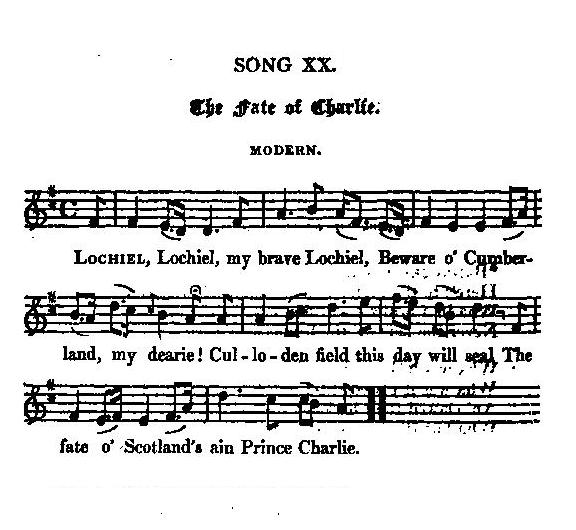

The Fate of Charlie
Le destin de Charles
Battle of Culloden
"Is by no less a man than Willison Glass " " (Hogg)Tune - Mélodie
"The Fate of Charlie"
from Hogg's "Jacobite Relics" 2nd Series Appendix, Jacobite songs N°20 (published in 1821)
Sequenced by Christian Souchon


|
THE FATE OF CHARLIE
1. Lochiel. Lochiel, my brave Lochiel, Beware o' Cumberland, my dearie! Culloden field this day will seal The fate o' Scotland's ain Prince Charlie. 2. The Highland clans nae mair are seen To fight for him wha ne'er was eerie, They fallen are on yon red field, An' trampled down for liking Charlie. 3. He was our Prince-nane dare say no, The truth o' this we a' ken fairly; Then wha would no joined hand in hand, To've kept frae skaith our ain Prince Charlie? 4. Glenullen's bride stood at the yett, Her lover's steed arrived right early; His riders gane, his bridle's wet, Wi blude o' him wha fell for Charlie! 5. O weep, fair maids o' Scotia's isle, Weep loud, fair lady o' sweet Airlie; Culloden reeks wi' purple gore' O' those wha bled for Scotia's Charlie. 6. Repent, repent black Murray's(*) race, Ye were the cause o' this foul ferlie, An' shaw to Georgie wha fills his shoon, That ye'll no sell him like puir Charlie. (*)cf "Cumberland and Murray" |
LE DESTIN DE CHARLIE
1. Lochiel. Lochiel, brave Lochiel, Gare à Cumberland, mon ami! La journée de Culloden scelle Le destin du Prince Charlie. 2. Désormais aucun de nos clans, Ne défend sa cause chérie, La lande est abreuvée du sang Qu'ils ont répandu pour Charlie. 3. C'était notre Prince, et qui donc Pourrait nier qu'il en fût ainsi? Nous formâmes nos bataillons, Pour garder le Prince Charlie? 4. La promise de Glenullen, Voit arriver son cheval gris Démonté, dont suintent les rênes Du sang qu'il versa pour Charlie! 5. Pleurez, humbles filles d'Ecosse, Pleurez, nobles dames d'Airlie; Car tout Culloden fume encore Du sang répandu pour Charlie. 6. Honte à toi, Murray (*), à ta race, L'auteur de cette tragédie, Montre à Georges qui le remplace, Que tu n'es traître qu'à Charlie. (*)cf "Cumberland and Murray"
Traduction Christian Souchon (c) 2006
|